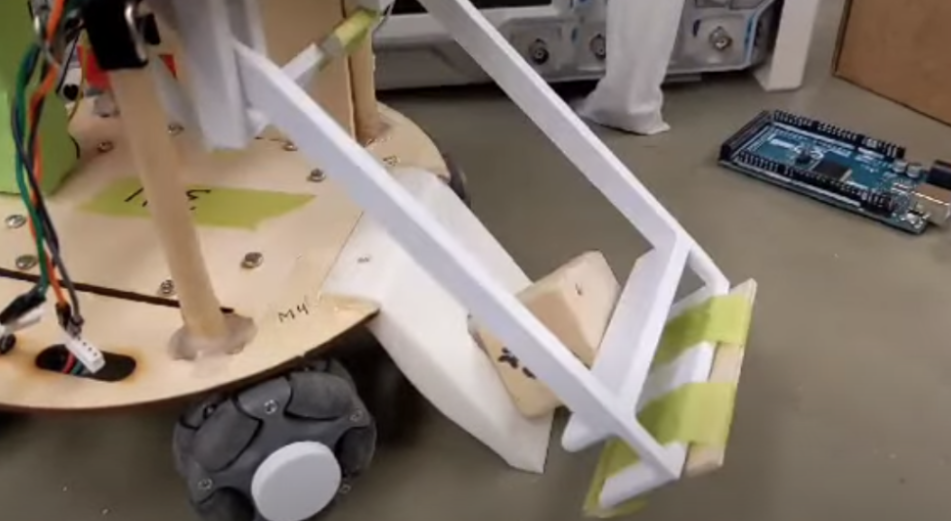
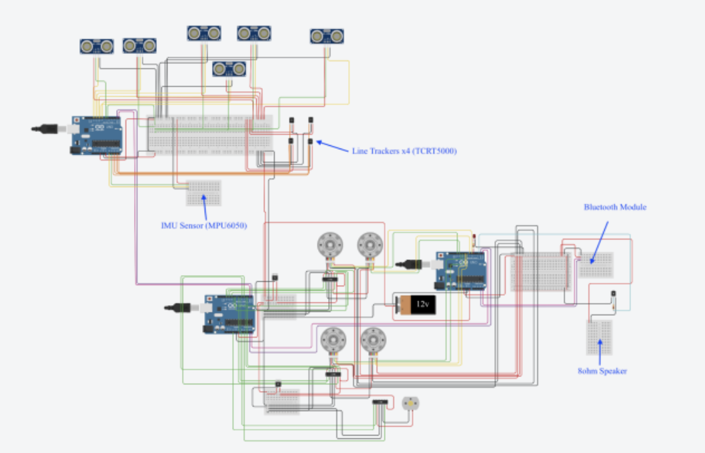
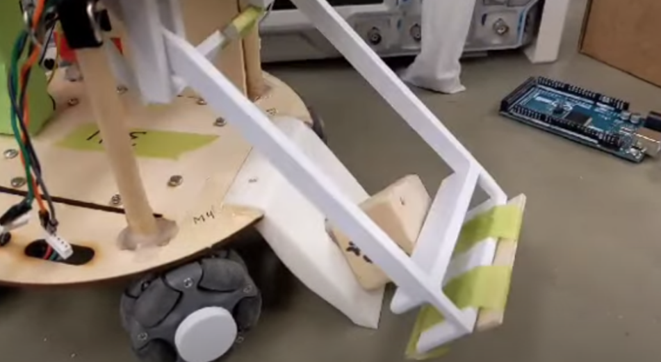
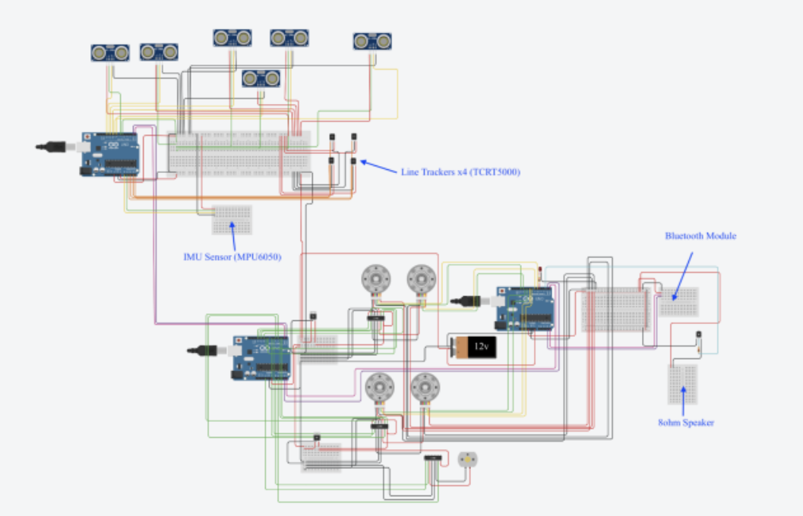

Daedalus - Maze Solving Rover
Pushing the limits of speed, versatility, and autonomous navigation using an Omni-Wheel X-Drive system
-------------------------------------------------------------------------------------------------------------------------------------------------------------------------------------
Objective:
The Daedalus Maze Solving Rover was developed to demonstrate fully autonomous navigation, object detection, and block retrieval in a dynamic maze environment. The project aimed to create a fast, versatile, and reliable robotic system capable of executing complex tasks under real-world conditions, integrating mechanical, electrical, and software subsystems seamlessly.
Process:
The rover was designed with an Omni-Wheel X-Drive configuration to maximize maneuverability, allowing continuous translation and rotation without discrete turning steps. Control algorithms were implemented on an Arduino microcontroller in C++, using PID-based motion control for brushless DC motors. Ultrasonic sensors and an IMU were integrated to enable precise localization and obstacle detection. Mechanical components were fabricated and iteratively refined using 3D printing, laser cutting, and machining to support rapid design improvements. A wireless communication system was developed between the sensor suite and the central controller to offload computational demands while maintaining real-time performance.
Challenges:
A major challenge was achieving smooth continuous motion while maintaining accurate localization and avoiding collisions with the X-Drive configuration. Coordinating multiple sensors and synchronizing motor control required extensive testing, debugging, and PID tuning. Mechanical alignment and calibration were critical to prevent slippage and ensure stability during high-speed maneuvers. Integrating hardware and software subsystems into a cohesive system demanded careful iterative testing and close collaboration across disciplines.
Results:
The project successfully demonstrated fully autonomous navigation and block retrieval in complex maze configurations. The rover achieved smooth continuous movement with reliable localization and collision avoidance. Field tests validated performance, highlighting the effectiveness of the X-Drive system and integrated sensor suite. The project provided practical experience in autonomous navigation, motion control, sensor integration, real-time system optimization, precision mechanical fabrication, and multidisciplinary collaboration.
-------------------------------------------------------------------------------------------------------------------------------------------------------------------------------------
 


